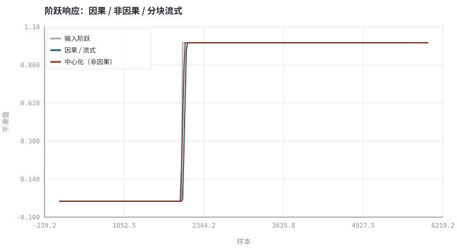
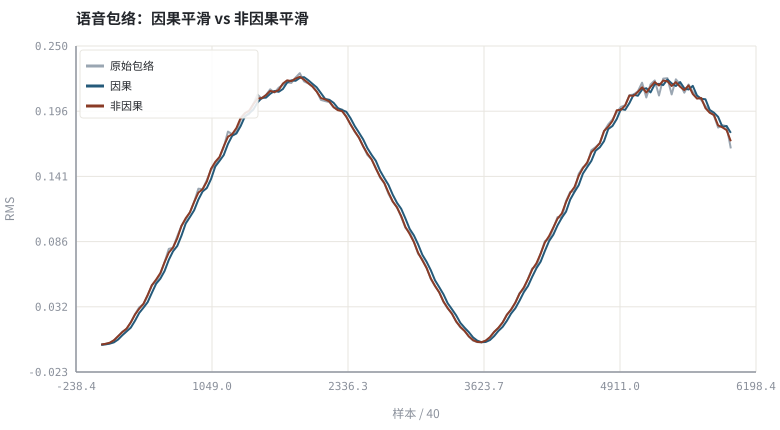

第 27 章因果性与流式推理：状态缓存、感受野
实时不是「跑得快」，而是「输出第 n 个样本时绝不看第 n+1 个」。
本章位置：第 26 章 · 联合 3A：多任务、级联与端到端建模 完成模型结构，本章给出流式的正确性判据；第 28 章 · 延迟预算与 RTF：实时链路账本 把这些状态与等待时间折成延迟预算，第 29 章 · 量化、剪枝与端侧推理 再压缩算力。
流式推理就是「把无状态函数改成带 state 的迭代器」：同一份权重、同一份计算图，只是把历史窗口显式存在结构体里。
- 能给出因果系统的形式定义并识别常见违规写法。
- 能实现分块流式处理并验证它与离线因果处理逐样本一致。
- 能量化非因果前瞻带来的「虚假提前量」。
- 能列出 TCN / RNN / 注意力各自的状态缓存内容。
§知识点地图
每个知识点都配了 1～2 个扩展学习链接；本章完整资源清单见 扩展学习。
| # | 知识点 | 扩展学习 | 状态 |
|---|---|---|---|
| 1 | 因果性定义 | RFC 3550 RTP ↗ · ONNX Runtime ↗ | 正文已覆盖 |
| 2 | 算法前瞻与延迟 | RFC 3550 RTP ↗ · MDN Web Audio API ↗ | 正文已覆盖 |
| 3 | 分块流式处理 | torchaudio ↗ · ONNX Runtime ↗ | 正文已覆盖 |
| 4 | 状态缓存 | torchaudio ↗ · ONNX Runtime ↗ | 正文已覆盖 |
| 5 | 膨胀卷积感受野 | The Scientist and Engineer's Guide to DSP ↗ · SciPy signal ↗ | 正文已覆盖 |
| 6 | RNN 隐状态 | torchaudio ↗ · ONNX Runtime ↗ | 正文已覆盖 |
| 7 | 注意力 KV 缓存 | torchaudio ↗ · ONNX Runtime ↗ | 正文已覆盖 |
| 8 | 流式与离线等价 | torchaudio ↗ · ONNX Runtime ↗ | 正文已覆盖 |
§27.1因果是一条单元测试
因果: y[n] = f(x[0..n], state[n−1]) ；非因果: y[n] = f(x[0..n+L])
判断是否因果有个笨但可靠的办法：把输入在 n+1 处截断，输出 y[0..n] 必须一模一样。双向 RNN、非因果卷积、整段归一化、全局注意力都会破坏这条性质。离线论文里漂亮的数字若用了未来帧，在实时链路上要么删掉，要么把前瞻时间加进延迟预算。
| 结构 | 需要的状态 | 感受野 | 流式可行性 |
|---|---|---|---|
| 因果 TCN | 每层最后 (K−1)·d 个样本 | 由膨胀系数决定 | 好，状态大小可预算 |
| GRU / LSTM | 隐状态向量 | 理论无限 | 好，但逐帧串行 |
| 因果注意力 | KV 缓存 | 窗口长度 | 可以，内存随窗口增长 |
| 双向 / 整段归一化 | 整段输入 | 全序列 | 不可流式，只能离线 |
§27.2分块推理的正确性契约
- 状态即接口：每个模块暴露
reset()与process(block) -> (block, state)，状态必须显式传递，不能藏在全局里。 - 等价性测试：把长信号按 10 ms 切块逐块跑，与把整段一次性跑因果版本的结果应当在浮点误差内一致。
- 边界：STFT 的帧覆盖、卷积的左填充、AGC 的包络初值都会导致首块差异，需要预热或固定初值。
- 延迟：状态缓存本身不增加延迟，但为凑齐一个块而产生的等待会（第 28 章 · 延迟预算与 RTF：实时链路账本）。
用一个 k 点滑动平均代表「有状态的平滑器」，比较离线因果版、分块流式版与中心化（非因果）版，把「用未来帧换来的提前量」变成一个可测的样本数。
§Python 实验
实验 27-1 · 因果、非因果与分块流式的一致性及前瞻量
#!/usr/bin/env python3
# -*- coding: utf-8 -*-
"""实现三种滑动平均，验证流式与离线因果逐样本一致，并测量非因果前瞻。
全部语音 / 噪声 / 房间冲激响应均为代码合成信号，仅用于教学演示机制与量级。
"""
from __future__ import annotations
import math
import pathlib
import random
import statistics
import sys
import time
_here = pathlib.Path(__file__).resolve()
for _p in _here.parents:
if (_p / "tools" / "dsp.py").exists():
sys.path.insert(0, str(_p / "tools"))
break
from dsp import (SAMPLE_RATE, fft, hann, stft, istft, magnitude_db, spectrum,
white_noise, tone, chirp, synthetic_speech, rir, convolve,
fft_convolve, delay, clip, normalize_peak, rms, rolling_rms,
smooth, db, energy_db, snr_db, erle_db, seg_snr_db,
scale_align, si_sdr_db, lufs_approx,
write_wav, read_wav, wav_info)
from chart import Chart, heatmap, BLUE, RED, GREEN, AMBER
FIG = _here.parents[1] / "fig"
AUDIO = _here.parents[1] / "audio"
FIG.mkdir(exist_ok=True)
AUDIO.mkdir(exist_ok=True)
random.seed(7)
# ---- 参数区 ----
N = 6000
K = 64 # 平滑窗口（样本）
BLOCK = 256 # 流式分块大小（16 ms @ 16 kHz）
# ---- 计算与作图 ----
def causal_ma(x, k):
out, acc = [], 0.0
for i, v in enumerate(x):
acc += v
if i >= k:
acc -= x[i - k]
out.append(acc / min(i + 1, k))
return out
def centered_ma(x, k):
half, out = k // 2, []
for i in range(len(x)):
seg = x[max(0, i - half):min(len(x), i + half + 1)]
out.append(sum(seg) / len(seg))
return out
def stream_ma(x, k, block):
out, hist = [], []
for s in range(0, len(x), block):
for v in x[s:s + block]:
hist.append(v)
if len(hist) > k:
hist.pop(0)
out.append(sum(hist) / len(hist))
return out
step = [0.0 if i < N // 3 else 1.0 for i in range(N)]
env_c, env_n, env_s = causal_ma(step, K), centered_ma(step, K), stream_ma(step, K, BLOCK)
maxdiff = max(abs(a - b) for a, b in zip(env_c, env_s))
def cross(env):
for i, v in enumerate(env):
if v >= 0.5:
return i
return len(env)
lag = cross(env_c) - cross(env_n)
rng = random.Random(7)
speech = synthetic_speech(rng, N)
raw_env = rolling_rms(speech, 128)
smooth_c = causal_ma(raw_env, K)
smooth_n = centered_ma(raw_env, K)
c = Chart(FIG / "27-streaming.svg", "阶跃响应：因果 / 非因果 / 分块流式", xlabel="样本", ylabel="平滑值")
c.line(range(0, N, 20), [step[i] for i in range(0, N, 20)], "#9aa6b2", label="输入阶跃")
c.line(range(0, N, 20), [env_c[i] for i in range(0, N, 20)], BLUE, label="因果 / 流式")
c.line(range(0, N, 20), [env_n[i] for i in range(0, N, 20)], RED, label="中心化（非因果）")
print("阶跃图:", c.save())
e = Chart(FIG / "27-envelope.svg", "语音包络：因果平滑 vs 非因果平滑", xlabel="样本 / 40", ylabel="RMS")
e.line(range(0, N, 40), [raw_env[i] for i in range(0, N, 40)], "#9aa6b2", label="原始包络")
e.line(range(0, N, 40), [smooth_c[i] for i in range(0, N, 40)], BLUE, label="因果")
e.line(range(0, N, 40), [smooth_n[i] for i in range(0, N, 40)], RED, label="非因果")
print("包络图:", e.save())
carrier = tone(440, N, amp=0.30)
write_wav(AUDIO / "27-causal.wav", [carrier[i] * env_c[i] for i in range(N)])
write_wav(AUDIO / "27-noncausal.wav", [carrier[i] * env_n[i] for i in range(N)])
print("流式 vs 离线因果 最大误差=%.2e | 状态缓存=%d 样本 | 分块=%d 样本" %
(maxdiff, K - 1, BLOCK))
print("非因果提前量=%d 样本 = %.2f ms | 阶跃位置=%d | SAMPLE_RATE=%d" %
(lag, 1000.0 * lag / SAMPLE_RATE, N // 3, SAMPLE_RATE))操作：核对流式与离线因果的最大误差；试听两个 WAV 的起音先后。 预期与判读：分块流式与离线因果逐样本一致（浮点误差量级）；中心化平滑在阶跃之前就开始上升，这段「提前量」正是它不可实时的证据，若强行上线必须把同等时间计入算法延迟。
改参数看趋势：把 K 改成 128，提前量与状态缓存都约翻倍。 文件位置：part6/27-causal-streaming/code/27-causal-streaming.py


27-causal.wav
因果包络调制的音调：起音在阶跃之后（16 kHz / 16-bit 单声道，代码合成信号，不是真实录音）
27-noncausal.wav
非因果包络调制的音调：起音提前出现（16 kHz / 16-bit 单声道，代码合成信号，不是真实录音）
代码块右上角可一键复制；仓库里的 code/*.py 由 tools/extract_code.py 从这些代码块自动抽取。脚本只用标准库、固定 random.seed(7)，运行后写出 fig/*.svg 与 audio/*.wav；批量运行用 ./tools/run_python.sh。
§可选真机命令片段
以下命令不参与批量运行，需要本机自行安装对应工具。滤镜是否可用取决于本机 ffmpeg 版本与编译选项，请先用 ffmpeg -filters / ffmpeg -version 自查，并以 https://ffmpeg.org/ffmpeg-filters.html 与各自官方文档为准；本书不假定任何特定版本具备某项能力。
查看流式推理与 STFT 缓存的工业接口
python3 -c "import torchaudio; print(torchaudio.__version__)"说明：torchaudio 的流式 STFT / 缓存接口见 https://docs.pytorch.org/audio/stable/index.html ；本机未必安装，本书实验不依赖它。
§本章参考资料
按本章知识点挑选的精读资料；更多检索入口见 扩展学习。
§相关开源工程
下列工程仅作技术参照，版权与许可证归各自维护者所有。本书实验不依赖它们，也与之无从属关系。
§常见误区
- 用双向层或整段归一化，却在报告里写「实时」。
- 把状态藏在全局变量里，多路并发时串线。
- 忽略首块预热，导致上线后第一句异常。
- 只测吞吐不测最坏单帧耗时。
§习题与思考
- 写出 process(block, state) 的接口契约与等价性测试。
- 估算 5 层膨胀 TCN 需要缓存多少历史样本。
- 解释为什么「提前量」不能通过提高算力消除。
§扩展学习
继续检索
- Google Scholar：causal TCN Conformer low latency streaming state cache ↗
- arXiv：causal TCN Conformer low latency streaming state cache ↗
- GitHub：causal TCN Conformer low latency streaming state cache ↗
全书链接总表见 FFmpeg Filters 文档 ↗ 与 附录 A.7；滤镜是否可用请以本机 ffmpeg -filters 为准。